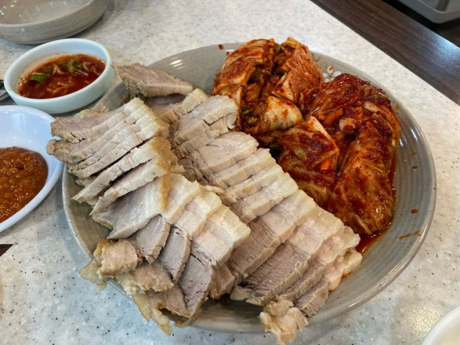
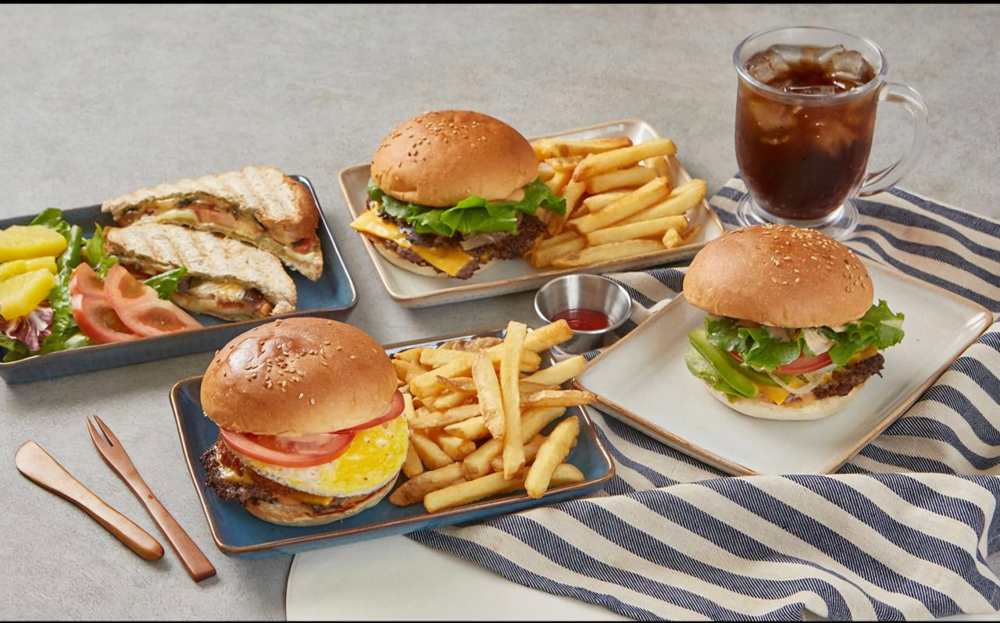
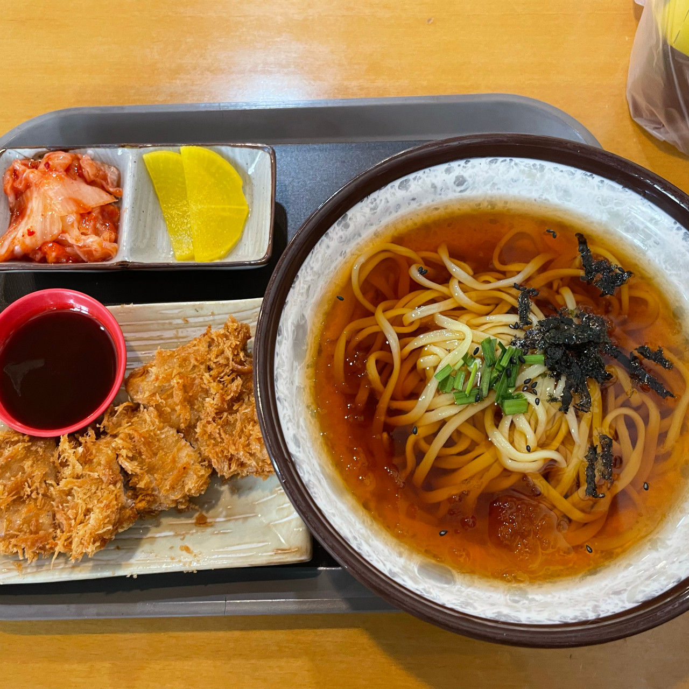
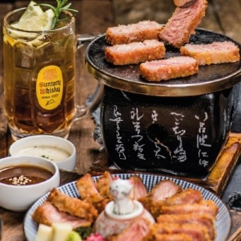

🍚 한식
| 대표이미지 |
상호 |
구분 |
평점 |
위치 |
|  |
우이동주막집 |
족발, 보쌈 |
4.2 |
서울특별시 강북구 삼양로141길 4-6 |
 |
솔밭집 |
한식 백반 |
4.3 |
서울특별시 강북구 솔샘로 예시 1길 23 |
 |
시골농장 |
된장찌개, 제육볶음 |
4.5 |
서울특별시 강북구 시골로 12길 11 |
 |
사리원돼지국밥 |
국밥, 순대국 |
4.4 |
서울특별시 강북구 도봉로 14길 3 |
 |
갈비냉면 |
갈비, 냉면 |
4.6 |
서울특별시 강북구 냉면로 88 |
🍔 양식
| 대표이미지 |
상호 |
구분 |
평점 |
위치 |
|  |
원더버거 |
수제버거 |
4.5 |
서울특별시 강북구 예시로 123 |
 |
하루 한끼 |
샐러드, 파스타 |
4.4 |
서울특별시 강북구 하루길 12 |
 |
리얼파스타 |
파스타, 리조또 |
4.6 |
서울특별시 강북구 파스타로 88 |
 |
엘수에뇨 |
이탈리안 |
4.3 |
서울특별시 강북구 수유동 로맨스길 7 |
🥟 중식
| 대표이미지 |
상호 |
구분 |
평점 |
위치 |
 |
황금성 |
짜장면, 탕수육 |
4.2 |
서울특별시 강북구 도봉로 21 |
 |
쎄쎄 |
중식요리, 볶음밥 |
4.4 |
서울특별시 강북구 미아동 쎄쎄로 8 |
 |
마라순코우 마라탕 |
마라탕, 훠궈 |
4.3 |
서울특별시 강북구 마라로 5 |
🍣 일식
| 대표이미지 |
상호 |
구분 |
평점 |
위치 |
 |
다몬초밥 |
초밥, 사시미 |
4.5 |
서울특별시 강북구 초밥길 1 |
 |
고도라멘 |
라멘, 돈코츠 |
4.4 |
서울특별시 강북구 라멘로 2 |
|  |
양국 |
일식덮밥, 규동 |
4.3 |
서울특별시 강북구 일본로 3 |
|  |
상미규카츠 |
규카츠 |
4.6 |
서울특별시 강북구 규카츠길 10 |